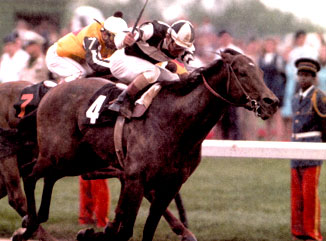
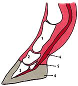

An ounce of prevention could
save your horse a world of pain.
Fort Collins, Colorado, November 1994
The stallion was sedated and quickly settled down. Sure enough an exam revealed a sky-high heart rate and brick-red gums - unmistakable signs of colic. A belly tap, done by carefully inserting an 18-gauge needle into the horse's abdomen, yielded a tube of thick, brownish blood-tinged fluid. A ruptured stomach was suspected. Too many injections of painkillers, given to treat the stallion's laminitis, had eaten through his stomach wall, allowing feed to spill into the abdominal cavity and causing severe infection and the resulting colic. Laminitis was attempting to claim yet another victim.
Emergency surgery was needed. The once champion racehorse was led, legs trembling and wobbling, to the surgery room. A catheter was quickly placed, and the horse collapsed to its knees as the anesthetic coursed through its veins.
Twenty years earlier, on thefirst Saturday in May, Foolish Pleasure pranced rebelliously. His handlers steered him toward the starting gates of Churchill Downs, as a buzzing sellout crowd anx iously anticipated the start of the Kentucky Derby. Finally settled into their gates, the three-year-olds bolted as the starters gun released them. Foolish Pleasure quickly moved up along the rail.
The equine foot: 1) proximal phalynx, 2) middle phalynx, 3) distal, or third, phalynx, 4) deep digital flexor tendon, 5) coronary band, 6) laminae, or layers, of the hoof wall. In laminitis, blood flow to the hoof is disrupted, causing laminae of the hoof to separate from underlying structures of the foot.
Laminitis is a debilitating, painful disease that causes the delamination of the equine hoof. The sensitive tissues underneath the hoof wall become excruciatingly painful as the layers of hoof wall, or laminae, separate. Usually the front feet are affected, where two-thirds of a horse's heft are concentrated. On a thousand-pound horse each front foot, measuring roughly the size of a human hand, carries approximately 350 pounds of weight.
The anatomy of the horse's foot yields clues as to why these animals are susceptible to laminitis (see illustration). The horse is a single-toed animal, and the last bone, or phalynx, of the digit is encased in multiple layers of a tough protein called keratin, the same stuff our fingernails are made of. These protective layers comprise the hoof and are supplied with nutrients by a complex system of microscopic blood vessels.
Certain substances in the blood can cause changes in the blood flow to the hoof. The layers of the hoof begin to separate, causing severe pain to the underlying tissue. Worse, the most distant bone of the foot begins to rotate within the delaminating hoof as it is pulled by the deep digital flexor tendon. In severe cases the bone can rotate right through the sole of the hoof and come in contact with the ground.
Imagine having all of your fingernails and toenails peeled off simultaneously and you can appreciate the degree of pain involved in laminitis. Because it is so painful and debilitating, many horses with this disease have to be destroyed.
On that May afternoon at Churchill Downs, as the thoroughbreds began to spread out along the rail, Foolish Pleasure and Avatar moved to the frontof the pack, throwing clods of dirt into the faces of the trailing horses and jockeys. They passed the half-mile mark three lengths ahead of the nearest horse.
Numerous causes of laminitis have been identified. The most common is the over-consumption of carbohydrate-rich grain or lush pasture, which causes changes in the microbial climate of the intestines, leading to the release of bacterial toxins into the bloodstream. These toxins disrupt normal blood flow to the hoof, causing laminitis.
Other triggers of laminitis are not as well understood, though all are known to cause similar changes in blood flow to the feet. Overconsumption of cold water, excessive concussion of the hooves on hard surfaces and ingestion of black walnut shavings or beet tops are all potential culprits. Any disease that causes the release of bacteria into the bloodstream, such as colic or uterine infection, also can lead to laminitis. Sadly, the underlying cause is sometimes never identified.
Rounding the far turn, Foolish Pleasure pulled a nose ahead of Avatar. The crowd thundered its approval and dismay. The jockeys franticallyurged both horses to go all out.
Though cases range from mild to severe, the general signs of laminitis are usually unmistakable. The horse will stand in a "sawhorse" stance, with all four legs angled out from the normal position. The animal may shift its weight constantly from leg to leg. In severe cases, a horse will simply lay on its side to get its weight off of its feet. Untreated horses will stop eating and lose weight.
A throbbing, pounding pulse can be detected in the arteries leading to the hooves. The vessels running to the hooves are paired, one toward the inside and one toward the outside of each foot; you can easily feel the pulse by placing your index finger on the back of the leg, just above the top of the hoof. If a horse is in pain, its pulse will often increase to greater than 50 beats per minute.
Also in a horse with laminitis you will occasionally feel heat at the top of the hoof in an area known as the coronary band. When hoof testers (instruments resembling ice tongs) are placed on the hoof, there is a consistent pain response everywhere on the sole. In addition, you will sometimes see a separation of the inside of the hoof from the sole of the foot, a condition commonly known as "seedy toe."
X-rays of the foot may show rotation of the last toe bone. If the bone is rotated more than ten degrees, the prognosis is usually considered hopeless.
A final way to check for laminitis is to have a vet inject the horse with a local anesthetic to deaden the nerve going to the sole of the foot. If the lameness goes away, it's a good indication of laminitis, especially if the pain and lameness return after the local anesthetic wears off.
In some horses, and especially ponies, laminitis tends to reoccur. The most common sign of intermittent laminitis is uneven growth rings around the hoof, where new hoof wall has grown in to replace the separated layers.
Finally galloping down the homestretch of the Derby, Foolish Pleasure slowly pulled ahead and streaked across the finish line almost two lengths ahead of Avatar. The champion horse would go on to become one of the most victorious stallions in history, winning almost $1.2 million. After his racing career, he was used as a stud horse and eventually retired to a large ranch in Wyoming.
While mild cases of laminitis often respond to treatment, moderate or severe cases can be extremely frustrating to deal with. When the last bone of the digit, encased in the hoof, begins to rotate through the sole of the foot, treatment options are few.
The good news is that laminitis can usually be prevented, a strategy concerned horse owners should dutifully employ. First, avoid giving large feedings of grain and deny horses access to grain bins. While an extra helping or two (eating another horse's ration, for instance) will not cause problems, binge eating will.
Grain overload usually occurs when horses break into the grain shed and eat an entire garbage can or sack full of grain. Just one such incident can cause laminitis.
Second, never put horses on lush, green pasture without transitioning them gradually, as a single sudden change to such feeding ground can bring on the disease. Instead, start by letting horses onto the pasture for an hour a day and slowly but surely, over a two week period, work them up to full tune. Dryer pastures found in the West usually do not present a problem, unless a significant spring rainfall causes lush growth of new grasses; here, again, go for the slow transition.
Cases of laminitis caused by grain overload can often be headed off by treating the horse with a mineral oil drench. A flexible plastic tube is threaded through the horse's nose into the stomach (another job for your veterinarian) and a gallon of mineral oil is poured down a funnel, where it hastens along the contents of the stomach and intestines before they can be absorbed. The stomach can also sometimes be emptied by putting several liters of water down the tube and siphoning off its contents.
But getting back to prevention, do not work horses hard on pavement or other hard surfaces. (Dairy cows kept on concrete are susceptible to laminitis, too, and will show a marked decrease in milk production.) Do not allow horses to drink large amounts of ice-cold water at one time. Avoid using black walnut shavings as bedding and do not use beet tops as feed. Lastly, be careful when treating with steroids, because high doses over a prolonged period can lead to the conditions that cause laminitis.
In November of 1994, almost 20 yearsafter winning the Kentucky Derby, Foolish Pleasure was brought to the Veterinary Teaching Hospital at Colorado State University. He had developed severe laminitis in all four feet and could barely be loaded off of the trailer. When he walked, his legs trembled with the excruciating pain.
Once the signs of laminitis are present, efforts are directed toward reducing pain and inflammation and improving blood flow to the hoof. Immediate veterinary care is needed, but while horse owners are waiting for the vet to arrive they can help out by exercising the animal lightly for about ten minutes out of every hour and placing the horse in a stall bedded with sand or on very soft ground.
Nonsteroidal anti-inflammatory medications (NSAIDS) such as Banamine or phenylbutazone are the mainstay of pain control. Drugs that improve blood flow to the foot by dilating arteries and reducing the possibilities of clots are also used (these include acepromazine, heparin and isoxyprine). Recently nitroglycerin, which has the ability to dilate blood vessels and improve blood flow, has also shown promise as a treatment.
Unfortunately, Banamine and phenylbutazone (commonly referred to as "bate") are well known for their tendency to cause ulcers as a side effect.
These medications affect different horses to varying degrees, depending on individual susceptibility. In one horse, ulcers might develop after a week on Banamine at .5 milligrams per pound of body weight daily, while another horse could go several months without developing ulcers. As a precaution, some kind of acid-blocking drug (i.e., Zantac, Cimetidine) is generally used to counter this problem.
Foolish Pleasure was placed in a sand stall, which allowed his hooves to move freely and decreased the pressure on his soles. He was immediately started on an aggressive treatment regimen including Banamine, isoxyprine and phenylbutazone. A stomach and intestinal protectant was given to reduce the possibility of damage caused by the anti-inflammatories.
Foolish Pleasure's owners wanted to do everything possible. Corrective shoes of different types, electrotherapy and massage were attempted without success.
Despite all treatment efforts, the painwas so extreme that be spent most of his hours lying on his side in the stall. As a result, he soon developed oozing pressure sores on his hips and shoulders. Antibiotics were introduced to help control infection. His owner decorated the stall with the ribbons plaques and awards that the 22 year-old stallion had collected in his younger days.
Visitors and hospital workers would walk by the stall to admire the awards, only to see this magnificent horse laid out lifelessly in his stall. During the infrequent times when Foolish Pleasure was standing, he would eat and drink quickly, shying his weight constantly because his feet could barely endure the pressure. Walking was too painful, so he never left his stall. Despite his pain, Foolish Pleasure always seemed to appreciate human contact and took his medications without balking.
In addition to sand stall and anti-inflammatory medications, corrective trim ming and shoeing can often help horses with laminitis. Often the toe is trimmed very short to reduce the pain from the pull of the tendon on the backside of the foot. Protective pads, known as lily pads, and elevated heels sometimes work to reduce pain and allow the hoof to grow back normally. Supportive shoes can take pressure off of the frog of the foot. Only highly experienced farriers should be consulted for corrective shoeing.
Foolish Pleasure's owners wanted to do everything possible. Corrective shoes of different types, electrotherapy and massage were attempted without success. The veterinarians and technicians supervising Foolish Pleasure's care began to openly discuss the need to consider euthanasia, but the owners, who had returned to their ranch in Wyoming, were determined to help their horse. Salvage surgery involving cutting the deep digital flexor tendon was considered but had a low possibility of success. A prosthetic foot had been developed but was still highly experimental. High doses of NSAIDS continued to be given, until that morning when the stallion was found thrashing in agony in his stall.
Because the disease is so painful and crippling, euthanasia is a common treatment for laminitis. Mercifully, it was finally provided for this famous horse as he lay on the surgery table, his abdomen contaminated with foodstuffs from his ruptured stomach. Laminitis had claimed another victim, despite every possible treatment given to the patient.
Gratefully, we all learned much from Foolish Pleasure's disease and death, especially about the severity of the side effects of many of the drugs commonly used to treat laminitis. Severe cases are usually hopeless and treatments may cause things to get much worse for the patient. In cases like this one, timely euthanasia is the most humane treatment.
Become versed at recognizing the signs of laminitis so your veterinarian can provide early treatment. And hope that, unlike the once triumphant Foolish Pleasure, none of your horses should ever have to endure this debilitating and often fatal condition.
Related info:
Risk Factors for Laminitis
|
 Jacinto Vasquez rides Foolish Pleasure (#4)to win the 1975 Kentucky Derby at Churchill Downs. |
|
 |